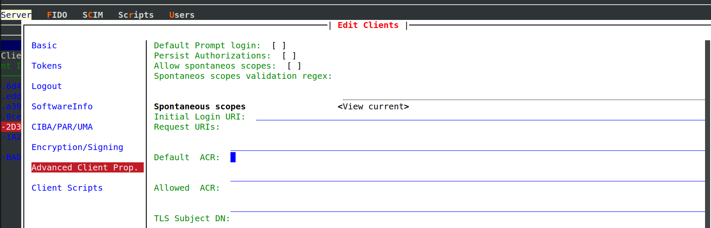
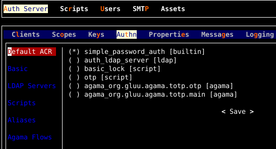

ACR#
ACR(Authentication Context Class Reference) is defined by OpenId Connect Specification.
Using ACRs and ACR configuration, the client application can define end-user authentication experience while ensuring required level of security for the application.
Supported ACRs#
Janssen Server lists supported ACRs in the response from Janssen Server's well-known configuration endpoint given below. Only ACRs that are supported and enabled by configuration will be part of the list.
https://janssen.server.host/jans-auth/.well-known/openid-configuration
The acr_values_supported claim in the response shows the list of supported and enabled ACRs for particular Janssen Server
deployment.
ACR categories:#
ACRs available in Janssen Server can be broadly put into three categories. These categories are just for ease of understanding.
1. Internal Janssen Server ACR#
Janssen server will use internal ACR only if no other authentication method is set or could be invoked.
This internal ACR, simple_password_auth, is set to level -1. This means that it has lower
priority than any other script. This ACR is always available and enabled on any Janssen Server deployment.
This ACR is a simple user-id and password-based authentication mechanism. It authenticates the end-user against the backend datastore.
2. ACR for authenticating using external LDAP or Active Directory#
Use the instructions provided in jans-tui LDAP configuration options documentation to learn how to enable and configure ACRs that use external LDAP or Active Directory as IDP.
3. Script-based ACRs#
To offer highly flexible and pluggable authentication flows, Janssen Server uses script-based ACRs. These ACRs are associated with a corresponding person authentication script. To use these ACRs in the authentication flow, the associated script should be enabled.
4. Agama ACRs#
Agama acrs starts from agama_ prefix. All of them invoke underlying agama bridge script called agama.
General pattern is agama_<flow name>.
Configuring ACRs in the JANS AS:#
ACRs can be configured on two levels:
1. Client Level ACR#
The client can configure a specific ACR that should be used if the authentication request is missing acr_values
parameter. This can be configured using Default ACR attribute of the client configuration.
Also, the client can restrict ACR values that authentication requests can have as part of acr_values parameter. This can be configured using Allowed ACRs.
Using the Janssen Text base UI (TUI) configuration tool, these values can be configured by navigating to
Auth Server->clients->get clients->choose a client and press enter->Advanced Client Prop. On this screen
populate ACR values in Default ACR and Allowed ACRs:

2. Server Level ACR#
Janssen Server administrator can configure an ACR that should be invoked if ACR for incoming requests can not be determined using client-level configuration. This is the default authentication mechanism exposed to all the clients that send end-users to the Janssen Server for sign-in.
To configure this parameter using Janssen Text base UI (TUI) configuration
tool, navigate to Auth Server->Authn->Default ACR as shown below:

ACR Precedence Levels#
Each authentication mechanism (script) has a "Level" assigned to it which describes how secure and reliable it is.
The higher the "Level" represents higher reliability. Though several mechanisms(ACRs) can be
enabled for the same Janssen server deployment at the same time, for any specific user's session only one of them can be
set as the current ACR (and will be returned as acr claim of id_token).
After the creation of the initial session, if RP sends a new request with a different ACR, then ACR's "Level" will be compared to that of the method associated with the current session. If the requested method's "Level" is lower or equal to current ACR's level, nothing is changed and the usual SSO behavior is observed. If the new level is higher (i.e. a more secure method is requested), and it's not possible to serve such a request using the existing session's context, then the user must re-authenticate to continue. If the user succeeds, a new session with a new ACR gets associated.
ACR mappings (aliases)#
There is acrMappings AS configuration property which allows to specify aliases for acrs.
acrMappings contains simple map in key-value form.
Lets say RP sends request with acr_values=loginWithOtpCheck. If acrMappings contains mapping "loginWithOtpCheck":"otp" then
AS will map loginWithOtpCheck to otp and will use acr_values=otp for actual processing on server side.
It means that custom script must be called otp in this case on AS side and not loginWithOtpCheck (because loginWithOtpCheck is alias to otp).
ACR mappings are published on discovery page GET /.well-known/openid-configuration HTTP/1.1
{
...
"acr_mappings":{"alias1":"acr1", "loginWithOtpCheck": "otp"}
...
}
Flowchart : How the Jans AS derives an ACR value for a user session#
flowchart TD
A[RP send authentication request] --> B{Request contains <br /><code>acr_values</code> parameter?}
B -->|Yes| C[Perform Authentication]
B -->|No| D{<code>Default ACR</code> <br />configured for <br />client?}
D -->|Yes| C
D -->|No| E{<code>Default ACR</code> value <br />configured for <br />Janssen Server?}
E --> |Yes| C
E --> |No| F[Select <br />internal ACR as<br /> Authentication method] --> C- When authentication request is received from a client(RP), the Janssen Server looks for
acr_valuesparameter in the request. This parameter is defined in the OpenId Connect core specification, section 3.1.2.1. - If the
acr_valuesparameter is not received with the request, then Janssen Server uses the value from theDefault ACRconfiguration from the client - If Janssen Server doesn't find
acr_valuesrequest parameter nor does it find theDefault ACRconfigured for the client, then the Janssen Server checks the server configuration property useHighestLevelScriptIfAcrScriptNotFound. If this property is set to true, then Janssen Server invokes the authentication mechanism for which the corresponding person authentication script is enabled. Choosing the script with the highest level. - If no script can be invoked or the
useHighestLevelScriptIfAcrScriptNotFoundproperty is set to false, then the Janssen Server authenticates using the default ACR for the server. - If the default ACR for the server is not configured by the Janssen Server administrator, or it can not be invoked due to any reason, then the Janssen Server uses the internal server ACR to authenticate the end-user.
Errors#
unmet_authentication_requirements#
If authorization request is sent to Authorization Endpoint with acr_values for which
AS it not able to find "Person Authentication" custom script, it returns "unmet_authentication_requirements"
with detail log in jans-auth.log.
Want to contribute?#
If you have content you'd like to contribute to this page in the meantime, you can get started with our Contribution guide.